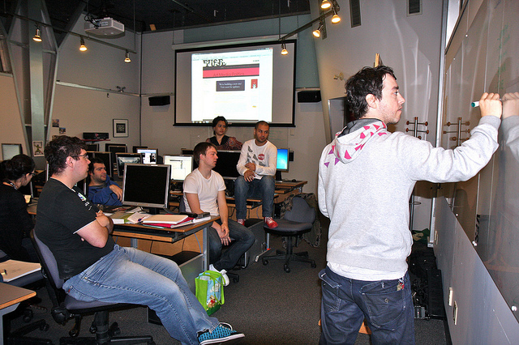

About the School of Web
As key stakeholders consisting of practicing Web professionals, experienced educators, community and business leaders we have an obligation to do better. We need to challenge one another and commit to a course of action that will improve student outcomes and a better prepared work force for tomorrow’s workplace needs.
Our Goals
- Practicing Web professionals want access to the most relevant training resources to accomplish their goals including the skills and technologies that employers want and need the most.
- Students want to know that they are getting an excellent education that prepares them for meaningful employment.
- Teachers want to make sure their instruction is on-target and to know “what works” while seeking and receiving support to help them improve their practice through better curriculum and partnerships.
- Education program managers want help developing good site level plans so they can help teachers effectively implement change that will produce results, happy and successful students and good will in the community.
- Policy decision makers want to see improved results on a limited budget and time constraints.
How did we get started
Back in 1996, the WebProfessionals.org WebProfessionals.org aka “World Organization of Webmasters” association was founded. Its founders and its supporters have been advocating on behalf educational resources for Web professionals and those that teach ever since.
What's Inside?
- Web design, Web development and Web business resources including educational content, custom curriculum and training resources covering advanced techniques, and the most up-to-date best practices and methods
- Regularly scheduled activities, test your thinking quizzes and prizes offered by the WebProfessionals.org association
- Web professional directories
- Web professional job boards
- Web professional career guides
- How-to guides to establish a Web professional program at your school or college